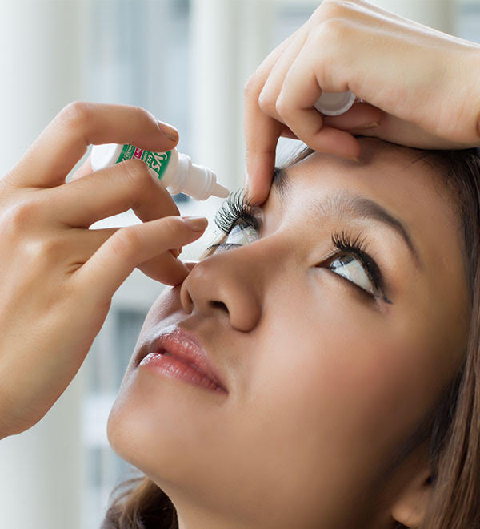

The importance of using eye drops
Wednesday, 15 December 2021 by
We should all be more aware about the strain and risks we subject our eyes to every day. Dry eye is a common occurrence. Over 1 in 4 people worldwide experience the symptoms of Dry Eye, including irritation, blurriness, a gritty feeling, tired eyes and stinging. Patients with Dry Eye are reportedly 3x more likely to report difficulties in daily activities (watching TV, working at a computer, reading, driving at night) than patients without Dry Eye.
6 most common situations that can put our eyes under strain
Excessive screen time
These days, you may find yourself in front of a screen more often than ever. You may blame the
latest pandemic or simply living in a digital age, but either way, this is the reality we all
experience. And would you really want to interrupt your favourite Netflix episode of that
unmissable series everyone is talking about, simply to give your eyes a rest? Or would you ever
keep your phone switched off for longer than a few minutes and risk missing any messages, video
calls or social media posts?
The answer is probably no. Yet your eyes won't be happy at the end, and screen fatigue will
inevitably kick in at some point.
Hay fever season
Those who suffer from it will know that hay fever can indeed happen in any season, although it is most commonly experienced during spring and summer. It usually manifests with symptoms such as runny nose and itchy eyes, as a reaction to pollen from grass, trees and weeds, but also house dust or mould. Although not particularly dangerous, hay fever can be annoying and prevent you from enjoying your favourite activities outdoors. And if you're tempted to rub your eyes to relieve yourself from the itchy feeling, you should refrain from doing so, as you can make the situation worse by transmitting dirt and bacteria from your hands.
Windy weather
Who doesn't enjoy a stroll in the park, especially in autumn when the colours around us are so vivid and beautiful? But how many times does wind get in the way of enjoying the walk? Windy weather is a foe for your sight, as it carries dust and tiny debris that will go into your eyes. Again, this can cause all sorts of irritations and nuisances to spoil your day.
Exposure to patio heaters and air conditioning
UK climate can be quite unpredictable, and socialising outside can often be a cold affair. Luckily we can rely on patio heaters to warm up the atmosphere in beer gardens, restaurants and rooftops. However, all good things come at a cost, and in this case, the bill will be paid by your eyes if you're not careful. Outdoor heaters, in fact, like indoor air conditioning, can dry your eyes very quickly and cause great discomfort by reducing the level of humidity in the air around you.
Sport and outdoor leisure activities
If you love running, cycling or playing tennis, undoubtedly you will have experienced teary eyes while practising your favourite sport. The thing is that, especially on those occasions, while you are exercising outdoors, you want to rely on a perfectly clear vision. Ideally, you should not have to constantly worry about things getting in your eyes and spoiling your time outside.
Wearing face masks
Wearing a mask is essential to help reduce the spread of COVID19. Especially when you're travelling on busy trains, tube or when you happen to be in a crowded place, you don't want to run the risk of not wearing a mask. However, we all know how uncomfortable this may be at times, as our eyes tend to dehydrate; you may have heard of the so-called Mask Associated Dry Eye (MADE). Breathing out with a mask on, can be a bit of a nuisance. As the breathing is channelled up through the nose and ends up in your eyes, causing tears to evaporate and drying up the surface.
Eye drops: a solution for your sore eyes
Eye drops can really help in each of the situations above mentioned. First and foremost, they help lubricate your eyes and replace their natural moisture, as well as relieve irritation and redness.
Eye drops for fast-acting relief
Eye drops will act fast to soothe and moisturise your eyes.
During the day, especially as your eyes are exposed to wind or dust, they are likely to feel irritated, and eye drops can offer relief. They can also help remove any dirt or debris that might be causing your vision to blur or become distorted
One thing to remember, if you wear contact lenses, is to only use eye drops that specifically state they are compatible with lenses on the bottle.
Our opticians recommend: Systane ULTRA by Alcon

Systane ULTRA eye drops produced by Alcon are based on a unique formula and technology that works intelligently with the surface of the eye to keep moisture locked in.
These fast-acting eye drops provide optimal comfort and protection against irritation and dryness, giving you the freedom to perform all the activities you love outdoors and indoors, whether you're spending long hours in front of a screen, reading or driving.
In addition, Systane ULTRA drops are practical and easy to use. They are also compatible with contact lenses and can be applied directly on the lenses while wearing them, so you don't have to worry about removing, storing and then putting on your contacts again. Today, life is fast-paced for most of us; hence it is important to equip yourself with eye care products you can use on the go. Easy peasy: 2 drops of Systane Ultra. 1 unstoppable you